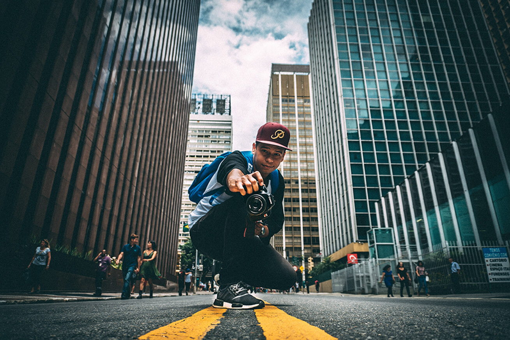
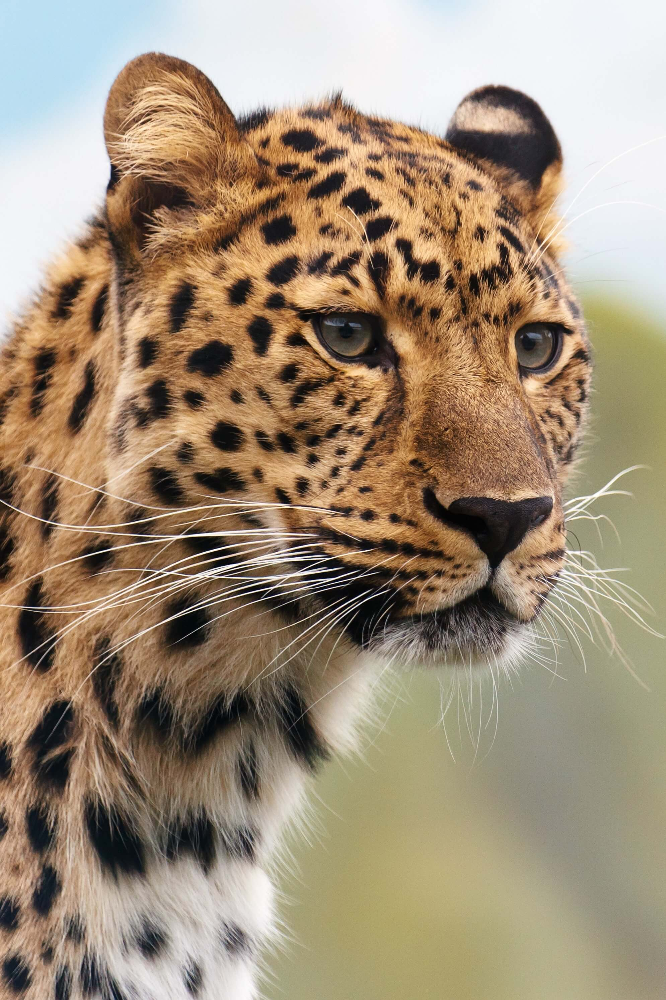
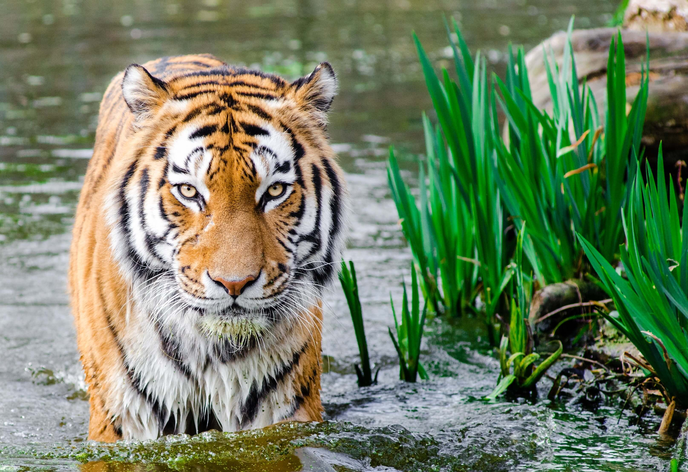
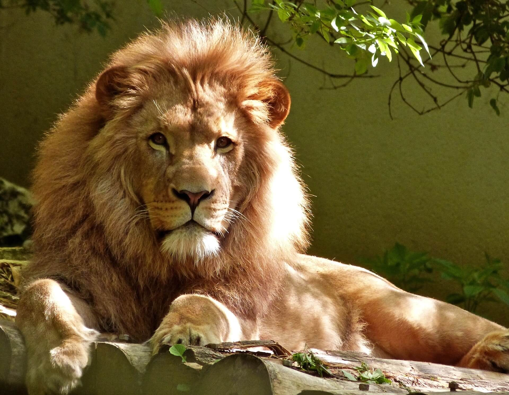
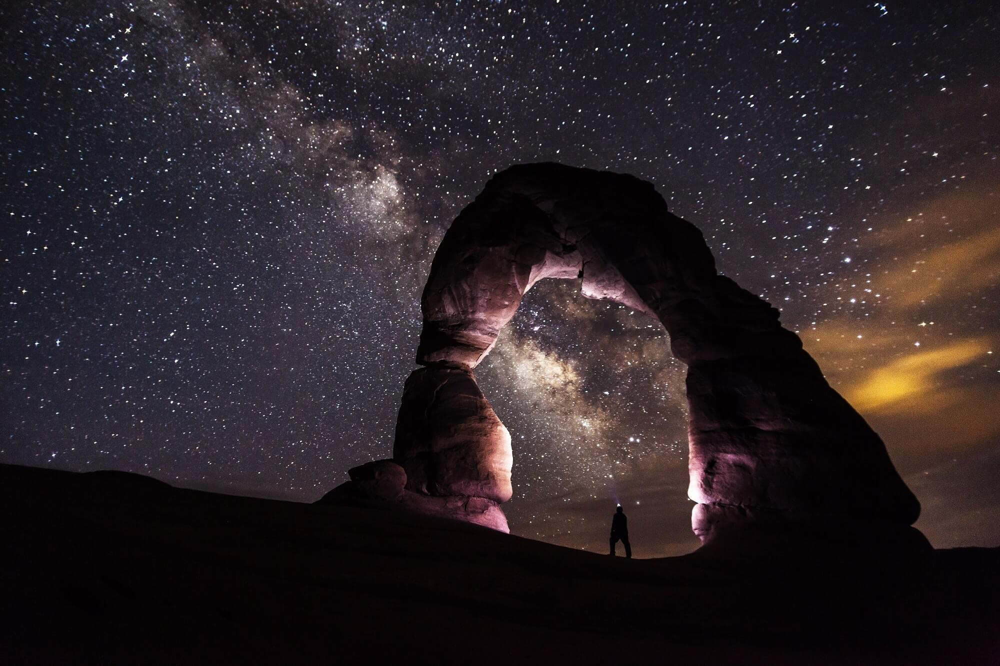

About Me
So who am I ? Hello 🖐My name is John Doe Senior Photographer at Hublo Magazine. Before you continue I wanted to share with you some of my experiences working at Hublo, and what actually makes me so passionate about photography 😍. Let's get back to the beginning when I was just a simple 13 years old child trying to get out of his pace to find his talent.In fact at that time I was like very dumm 😆. At 16 I received my first photo camera I think I got like a revelation ⭐️ I made my first shot and I knew I wanted to do that the rest of my life. So we all know what we have to do to succeed Work hard 👊.So I worked very hard engaging till that time I obtained an internship at Hublo something I couldn't Imagine before.It seems as if I performed very well at the internship because after like three months of internship they made me a Job offer , N.B I was a Bachelor student 😑. I declined the offer but after my Bachelor I went on making an offer and they were glad to make me one of theirs. So, what do I do at Hublo 🤔 . I basically take all the shots you see in their magazines as well as I modify Photos you know to make them look nice. I am a badass on all adobe softwares like Photoshop , Illustrator , Lightroom etc... Being a photographer here at Hublo is such a wonderful thing I travelled round the world and taking incredible photos. Lastly I came out with this little portfolio just to show to People some of my favourite shots and maybe in that way the would gain interest in Photography.Do not hesitate to check those in the Portfolio section and if you feel like wanting to get in touch with me,All you need is in the contact section.So thanks and one last thing "Stay Creative ⭐️".



